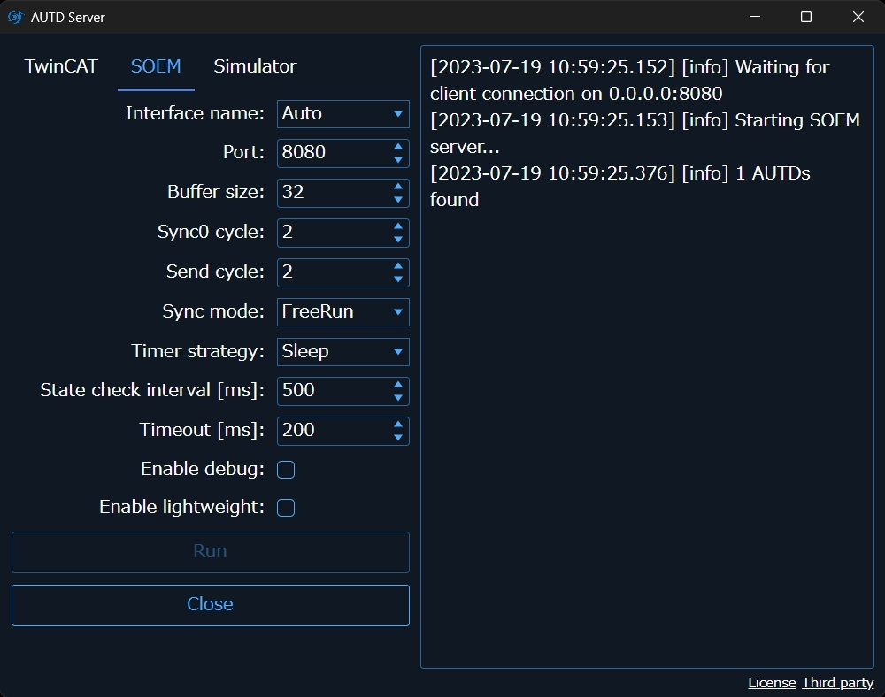

RemoteSOEM
This link is used to separate the server PC running SOEM from the client PC running the user program.
Install
cargo add autd3-link-soem --features "remote blocking"
if(WIN32)
FetchContent_Declare(
autd3-link-soem
URL https://github.com/shinolab/autd3-cpp-link-soem/releases/download/v31.0.1/autd3-link-soem-v31.0.1-win-x64.zip
)
elseif(APPLE)
FetchContent_Declare(
autd3-link-soem
URL https://github.com/shinolab/autd3-cpp-link-soem/releases/download/v31.0.1/autd3-link-soem-v31.0.1-macos-aarch64.tar.gz
)
else()
FetchContent_Declare(
autd3-link-soem
URL https://github.com/shinolab/autd3-cpp-link-soem/releases/download/v31.0.1/autd3-link-soem-v31.0.1-linux-x64.tar.gz
)
endif()
FetchContent_MakeAvailable(autd3-link-soem)
target_link_libraries(<TARGET> PRIVATE autd3::link::soem)
dotnet add package AUTD3Sharp.Link.SOEM
Add https://github.com/shinolab/AUTD3Sharp.Link.SOEM.git#upm/latest to Unity Package Manager.
pip install pyautd3_link_soem
Setup
To use RemoteSOEM, you need two PCs.
One of these PCs must be able to use SOEM.
Hereby, this PC is referred to as the “server”.
The other PC, which is the development PC using the SDK, has no particular restrictions as long as it is connected to the same LAN as the server.
Hereby, this PC is referred to as the “client”.
First, connect the server to the AUTD device.
Then, connect the server and client via a different LAN1.
Next, check the IP addresses of the LAN between the server and client.
For example, let’s assume the server’s IP is 172.16.99.104 and the client’s IP is 172.16.99.62.
AUTD Server
When using RemoteSOEM, you need to install AUTD Server on the server.
The installer is available on GitHub Releases, so download it and follow the instructions to install it.
When you run AUTD Server, you will see a screen like the one below. Open the SOEM tab.

Specify an appropriate port number in the port field and press the Run button.
If the AUTD3 device is found and a message indicating that it is waiting for a connection from the client is displayed, the setup is successful.
Note that AUTD Server allows you to specify options equivalent to those of SOEM.
APIs
In the constructor of RemoteSOEM, specify the
use autd3_link_soem::RemoteSOEM;
fn main() -> Result<(), Box<dyn std::error::Error>> {
let _ =
RemoteSOEM::new("172.16.99.104:8080".parse()?);
Ok(())
}#include <autd3_link_soem.hpp>
int main() {
using namespace autd3;
link::RemoteSOEM("172.16.99.104:8080");
return 0; }
using System.Net;
using AUTD3Sharp.Link;
new RemoteSOEM(new IPEndPoint(IPAddress.Parse("172.16.99.104"), 8080))
;
from pyautd3_link_soem import RemoteSOEM
RemoteSOEM("172.16.99.104:8080")
Firewall
If you encounter TCP-related errors, it is possible that the firewall is blocking the connection. In that case, configure the firewall to allow connections on the specified TCP/UDP port.
Wireless LAN is also acceptable.